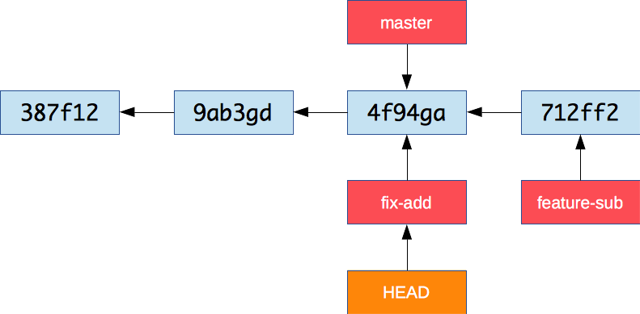
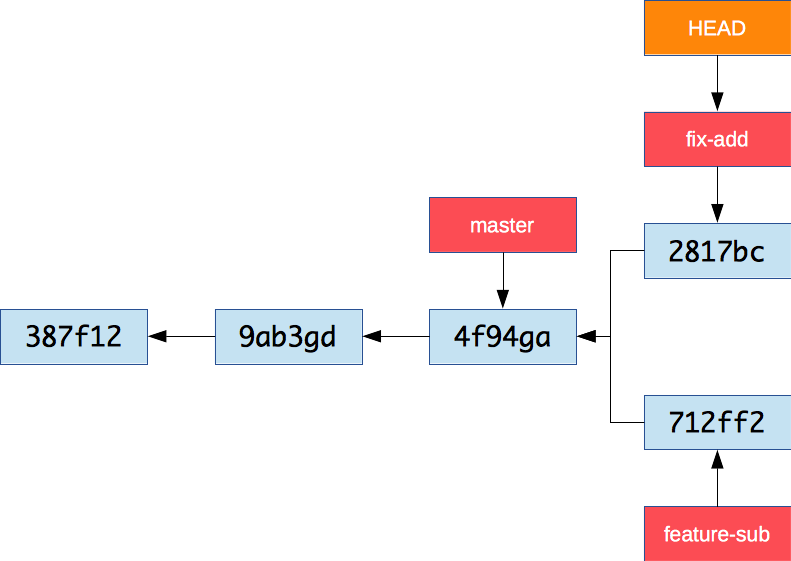
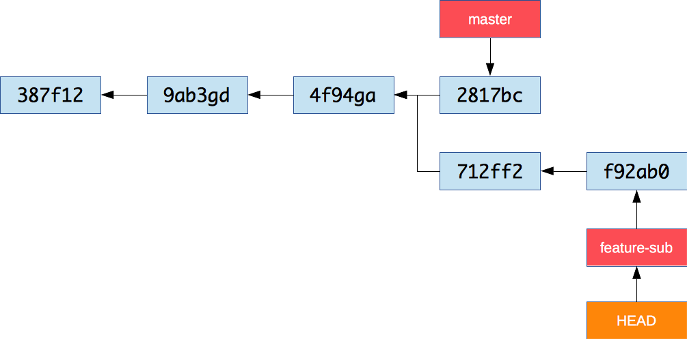

# Git Branching Learn how to work on isolated, parallel lines of development with [Git][git] branches. This material is used in [COMEM+](http://www.heig-vd.ch/comem) [web development courses](https://github.com/MediaComem/comem-webdev). **You will need** * A Unix CLI * [Git][git] **Recommended reading** * [Git introduction](../git/) --- class: center, middle ## What is branching? .breadcrumbs[<a href="#1">Git Branching</a>] <p class='center'><img src='images/commits.png' width='45%' /></p> > Branching means you diverge from the main line of development and continue to do work without messing with that main line. --- ### Why use branches? .breadcrumbs[<a href="#1">Git Branching</a> > <a href="#2">What is branching?</a>] Git has a very powerful branching model that is very **lightweight and fast**: it encourages workflows that branch and merge often. Many teams using Git create a **separate branch** to develop **each feature**. This has many advantages: * Each developer can work on his own feature, **isolated** from changes going on elsewhere * They can pull in changes from the mainline **at their own pace** * The team can choose **which features to release** and when --- ### What is a branch? .breadcrumbs[<a href="#1">Git Branching</a> > <a href="#2">What is branching?</a>] Remember that Git stores data as a series of snapshots. <img src='images/snapshots.png' width='45%' /> Each **commit** contains a pointer to the snapshot of the content you staged, the author's user name and e-mail, and also a pointer to the previous commit. --- #### Branches point to commits .breadcrumbs[<a href="#1">Git Branching</a> > <a href="#2">What is branching?</a> > <a href="#4">What is a branch?</a>] A branch is simply a lightweight, movable pointer to a commit. <img src='images/branch.png' width='45%' /> The default branch is **master**. The special **HEAD** pointer indicates the current branch. As you start making commits, the current branch pointer **automatically moves** forward to your latest commit. --- ### Example repository .breadcrumbs[<a href="#1">Git Branching</a> > <a href="#2">What is branching?</a>] We will use a prepared repository to illustrate branching. ```bash $> cd /path/to/projects $> git clone https://github.com/MediaComem/comem-webdev-git-branching-ex.git $> cd comem-webdev-git-branching-ex ``` Remove the link to the remote repository (will we talk more about it in [Collaborating with Git](../git-collaborating/)): ```bash $> git remote rm origin ``` As you can see if you type `git log`, there are some commits already. Open the project with your favorite editor and open the `index.html` page in a browser. --- class: center, middle ## Working with branches .breadcrumbs[<a href="#1">Git Branching</a>] --- ### Showing branches on the command line .breadcrumbs[<a href="#1">Git Branching</a> > <a href="#7">Working with branches</a>] The `git log` command can show you a representation of the commit graph and its branches: ```bash $> git log --oneline --decorate --graph --all * 4f94ga (HEAD -> master) Improve layout * 9ab3gd Fix addition * 387f12 First version ``` In fact, this command is so useful you should make an **alias**, as we will use it a lot in this tutorial: ```bash $> git config --global alias.graph "log --oneline --graph --decorate --all" $> git graph * 4f94ga (HEAD -> master) Improve layout * 9ab3gd Fix addition * 387f12 First version ``` --- ### Create a new branch .breadcrumbs[<a href="#1">Git Branching</a> > <a href="#7">Working with branches</a>] > **Exercise:** our JavaScript calculator is missing some code. > Let's create a branch to implement subtraction. It's very fast and simple to create a new branch: ```bash $> git branch feature-sub ``` <img src='images/new-branch.png' width='45%' /> There is now a new pointer to the current commit. Note that **HEAD** didn't move – we are still on the **master** branch. --- #### Showing the current branch .breadcrumbs[<a href="#1">Git Branching</a> > <a href="#7">Working with branches</a> > <a href="#9">Create a new branch</a>] You can use `git branch` without arguments to simply see the list of branches and which one you are currently on: ```bash $> git branch * master feature-sub ``` --- ### Switch branches .breadcrumbs[<a href="#1">Git Branching</a> > <a href="#7">Working with branches</a>] Now let's switch branches: ```bash $> git checkout feature-sub Switched to branch 'feature-sub' ``` <img src='images/checkout.png' width='45%' /> This moves `HEAD` to point to the `feature-sub` branch. --- ### Commit on a branch .breadcrumbs[<a href="#1">Git Branching</a> > <a href="#7">Working with branches</a>] > **Exercise:** implement subtraction in `subtraction.js` and commit your changes. As you commit, the current branch (the one pointed to by **HEAD**), moves forward to the new commit. ```bash $> git add subtraction.js $> git commit -m "Implement subtraction" ``` <img src='images/commit-on-branch.png' width='60%' /> --- ### Switch back to master .breadcrumbs[<a href="#1">Git Branching</a> > <a href="#7">Working with branches</a>] > **Exercise:** oops, you just noticed that addition is not working correctly. > You need to make a bugfix, but you don't want to mix that code with the new subtraction feature. > Let's **go back to master**. ```bash $> git checkout master Switched to branch 'master' ``` --- #### Checkout behavior .breadcrumbs[<a href="#1">Git Branching</a> > <a href="#7">Working with branches</a> > <a href="#13">Switch back to master</a>] Two things happened: * The `HEAD` pointer was **moved** back to the master branch * The files in your working directory were **reverted** back to the snapshot that master points to <img src='images/back-to-master.png' width='60%' /> You have essentially **rewinded** the work you've done in `feature-sub`, and are working on an **older version** of the project. --- ### Create another branch .breadcrumbs[<a href="#1">Git Branching</a> > <a href="#7">Working with branches</a>] > **Exercise:** let's a create a new branch to fix the bug. You can create a new branch *and* switch to it in one command: ```bash $> git checkout -b fix-add Switched to a new branch 'fix-add' ```  Nothing has changed yet because fix-add still points to the same commit as master. --- ### Work on a separate branch .breadcrumbs[<a href="#1">Git Branching</a> > <a href="#7">Working with branches</a>] > **Exercise:** fix addition in `addition.js` and commit your changes. ```bash $> git add addition.js $> git commit -m "Fix addition" [fix-add 2817bc] Fix addition 1 file changed, 1 insertion(+), 1 deletion(-) ``` --- #### Divergent history .breadcrumbs[<a href="#1">Git Branching</a> > <a href="#7">Working with branches</a> > <a href="#16">Work on a separate branch</a>] Now your project history has **diverged**. The changes in feature-sub and fix-add are **isolated**. You can **switch back and forth** between the branches with `git checkout`.  --- ### Merging .breadcrumbs[<a href="#1">Git Branching</a> > <a href="#7">Working with branches</a>] > **Exercise:** once you've tested your fix and made sure it works, you want to bring those changes back into the master branch. ```bash $> git checkout master $> git merge fix-add Updating 4f94ga..2817bc Fast-forward addition.js | 2 +- 1 file changed, 1 insertion(+), 1 deletion(-) ``` Notice the term **fast-forward**. The fix-add branch pointed to a commit **directly ahead** of the commit master pointed to. There is no divergent history, so Git simply has to **moves the pointer forward**. This is what is called a fast-forward. --- ### Delete a branch .breadcrumbs[<a href="#1">Git Branching</a> > <a href="#7">Working with branches</a>] > **Exercise:** now that we've brought our fix back into master, we don't need the fix-add branch anymore. Let's delete it. <img src='images/merge-fix-add.png' width='60%' /> ```bash $> git branch -d fix-add Deleted branch fix-add (was 2817bc). ``` --- ### Continue working on a feature branch .breadcrumbs[<a href="#1">Git Branching</a> > <a href="#7">Working with branches</a>] > **Exercise:** let's switch back to our feature-sub branch and finish our work. Write a comment for the subtract function and commit your changes. ```bash $> git checkout feature-sub (Write your comment...) $> git add subtraction.js $> git commit -m "Comment subtract function" ```  --- ### Merge a divergent history .breadcrumbs[<a href="#1">Git Branching</a> > <a href="#7">Working with branches</a>] > **Exercise:** now that we're happy with our new subtraction feature, we want to merge it into master as well. <img src='images/merge-divergent-history.png' width='75%' /> The feature-sub branch has **diverged** from some older point compared to master: Git cannot do a fast-forward. It will do a **three-way merge** instead, combining together the changes of master and feature-sub (compared to the common ancestor). A new commit will be created representing that state. --- #### Merge commit message .breadcrumbs[<a href="#1">Git Branching</a> > <a href="#7">Working with branches</a> > <a href="#21">Merge a divergent history</a>] > **Exercise:** switch back to the master branch and merge feature-sub into it. ```bash $> git checkout master $> git merge feature-sub Merge made by the 'recursive' strategy. subtraction.js | 5 ++++- 1 file changed, 4 insertions(+), 1 deletion(-) ``` Git will need to create a new commit when you run the merge command, so it will open the configured editor (vim by default) with a generated commit message: ```txt Merge branch 'feature-sub' # Please enter a commit message to explain why this merge is necessary, # especially if it merges an updated upstream into a topic branch. # # Lines starting with '#' will be ignored, and an empty message aborts # the commit. ``` Type `:wq` (**w**rite and **q**uit) to save and exit. --- #### Merge commit .breadcrumbs[<a href="#1">Git Branching</a> > <a href="#7">Working with branches</a> > <a href="#21">Merge a divergent history</a>] You can see the new **merge commit** that Git has created. It is a special commit in that it has more than one parent: <img src='images/merge-feature-sub.png' width='90%' /> Now that you're done, you can delete feature-sub: ```bash $> git branch -d feature-sub ``` --- ## Merge conflicts .breadcrumbs[<a href="#1">Git Branching</a>] Occasionally, the merge process doesn't go smoothly: if the **same line(s)** was modified in two diverging branches and you merge them together, Git can't know which is the correct version. Let's pretend that a colleague of yours also implemented the subtraction function but in a different way than you did. --- ### Find the common ancestor .breadcrumbs[<a href="#1">Git Branching</a> > <a href="#24">Merge conflicts</a>] We want to make it look as if your colleague did his work **at the same time** as you. Let's find the original starting point (the common ancestor where feature-sub and fix-add diverged) and start a new branch from there: ```bash $> git graph * 04fb82 (HEAD -> master) Merge branch 'feature-sub' |\ | * f92ab0 Comment subtract function * | 2817bc Fix addition | * 712ff2 Implement subtraction |/ * `4f94ga` (origin/master, origin/HEAD) Comment add function * 9ab3gd Simplify addition and subtraction implementation * 387f12 First version ``` Make a copy of that commit hash. --- ### Create a branch "in the past" .breadcrumbs[<a href="#1">Git Branching</a> > <a href="#24">Merge conflicts</a>] You can create a branch at any point in the project's history by passing an additional commit reference to `git checkout`: ```bash $> git checkout -b better-sub 4f94ga ``` <img src='images/better-sub-branch.png' width='90%' /> --- ### Make a conflicting change .breadcrumbs[<a href="#1">Git Branching</a> > <a href="#24">Merge conflicts</a>] Now edit `subtraction.js` and implement subtraction again, but in a different way. For example: ```js function subtract(a, b) { return -b + a; } ``` Note that if you try to check out the `master` branch at this point, Git won't let you do it because the state of `subtraction.js` is different in that branch: ```bash $> git checkout master error: Your local changes to the following files would be overwritten by checkout: subtraction.js Please commit your changes or stash them before you switch branches. Aborting ``` Commit your changes: ```bash $> git add subtraction.js $> git commit -m "Implemented a better subtract" ``` --- #### The state before merging .breadcrumbs[<a href="#1">Git Branching</a> > <a href="#24">Merge conflicts</a> > <a href="#27">Make a conflicting change</a>] Viewing the graph of commits, it's clear that the change has been made **in parallel** with our earlier changes: <img src='images/better-sub-commit.png' width='90%' /> --- ### Merge the conflicting branch .breadcrumbs[<a href="#1">Git Branching</a> > <a href="#24">Merge conflicts</a>] Go back to master and merge better-sub: ```bash $> git checkout master $> git merge better-sub Auto-merging subtraction.js CONFLICT (content): Merge conflict in subtraction.js Recorded preimage for 'subtraction.js' Automatic merge failed; fix conflicts and then commit the result. ``` Git tells you that a **content conflict** has occurred in `subtraction.js`. The merge has failed and no new commit has been created. --- ### Check the status of the conflict .breadcrumbs[<a href="#1">Git Branching</a> > <a href="#24">Merge conflicts</a>] Let's see what `git status` tells us: ```bash $> git status On branch master You have unmerged paths. (fix conflicts and run "git commit") (use "git merge --abort" to abort the merge) Unmerged paths: (use "git add <file>..." to mark resolution) both modified: subtraction.js no changes added to commit (use "git add" and/or "git commit -a") ``` * Git tells you that the merge is **not complete**: * You can either fix the conflicts and run `git commit` to end the merge, or cancel the whole thing with `git merge --abort` * `subtraction.js` was modified in **both the current branch and the branch we are trying to merge in** * You can use `git add <file>` to **mark the conflicts in a file as resolved** --- ### Inspect the conflicted file .breadcrumbs[<a href="#1">Git Branching</a> > <a href="#24">Merge conflicts</a>] Let's see what's in `subtraction.js`: ```js /** * Takes two numbers a and b, and returns the result of subtracting b from a. */ function subtract(a, b) { <<<<<<< HEAD return a - b; ======= return -b + a; >>>>>>> better-sub } calculate('subtraction', subtract); ``` Notice two things here: * Git has **successfully merged the comment** on the subtract function, since only one person changed these lines. * Git could not merge the line with the computation, because the changes in the two branches conflict. It has added **conflict markers** to help you solve the issue. --- ### Conflict markers .breadcrumbs[<a href="#1">Git Branching</a> > <a href="#24">Merge conflicts</a>] Take a closer look at the conflict markers: ```txt <<<<<<< HEAD return a - b; ======= return -b + a; >>>>>>> better-sub ``` * The section between `<<<<<<< HEAD` and `=======` is the content that was present in the current branch (`HEAD`) before you merged. * The section between `=======` and `>>>>>>> better-sub` is the content that is being merged in from the better-sub branch. Since Git cannot know which is better, it's **your responsibility** to: * Remove the version you don't want * Remove the marker conflicts ```js return -b + a; ``` --- ### Mark the conflict as resolved .breadcrumbs[<a href="#1">Git Branching</a> > <a href="#24">Merge conflicts</a>] Now that you have fixed the conflict, do as instructed by Git and add the file to the staging area: ```bash $> git add subtraction.js $> git status On branch master All conflicts fixed but you are still merging. (use "git commit" to conclude merge) Changes to be committed: modified: subtraction.js ``` Git tells you that all conflicts have been resolved but that you still need to **commit** to end the merge: ```bash $> git commit -m "Merge better-sub into master" ``` If you do not specify a commit message with `-m`, Git will generate one for you and open the configured editor (vim by default) for you to check and/or change the message. Type `:wq` to exit from vim and make the commit. --- #### The state after merging .breadcrumbs[<a href="#1">Git Branching</a> > <a href="#24">Merge conflicts</a> > <a href="#33">Mark the conflict as resolved</a>] Finally, delete the branch: ```bash $> git branch -d better-sub ``` The latest commit on `master` now includes the changes from all lines of development: <img src='images/better-sub-merged.png' width='90%' /> --- ## Merge file conflicts .breadcrumbs[<a href="#1">Git Branching</a>] Sometimes it's not just the contents of the file that are in conflict: you could have **modified the file** in your branch, and a colleague could have **deleted it** in another branch. Let's again pretend to be another colleague. This time, this colleague decided to delete `subtraction.js` in his branch because he doesn't like to see files with incomplete code: ```bash $> git checkout -b cleanup 4f94ga $> rm subtraction.js $> git add --all $> git commit -m "Remove incomplete implementations" ``` --- ### Merge the conflicting branch .breadcrumbs[<a href="#1">Git Branching</a> > <a href="#35">Merge file conflicts</a>] Let's try to merge that branch into master: ```bash $> git checkout master $> git merge cleanup CONFLICT (modify/delete): subtraction.js deleted in cleanup and modified in HEAD. Version HEAD of subtraction.js left in tree. Automatic merge failed; fix conflicts and then commit the result. ``` Git tells you immediately that there is a conflict and that: * `subtraction.js` was deleted in the cleanup branch * `subtraction.js` was modified in the current branch (`HEAD`) * Git doesn't know whether it should apply the deletion or the modification, so it left the modified file for you to check --- ### Check the status of the file conflict .breadcrumbs[<a href="#1">Git Branching</a> > <a href="#35">Merge file conflicts</a>] Let's see what `git status` tells us: ```bash $> git status On branch master You have unmerged paths. (fix conflicts and run "git commit") (use "git merge --abort" to abort the merge) Unmerged paths: (use "git add/rm <file>..." as appropriate to mark resolution) deleted by them: subtraction.js no changes added to commit (use "git add" and/or "git commit -a") ``` Again, Git gives us some information: * `subtraction.js` was **deleted by them**, meaning that it was deleted by someone else in the branch you're trying to merge in (if *you* had deleted it and they had modified it, it would be *deleted by us*) * Use either `git add` or `git rm` to mark the conflict as resolved --- ### Resolving the file conflict .breadcrumbs[<a href="#1">Git Branching</a> > <a href="#35">Merge file conflicts</a>] You have to choose whether you want to: * Keep the modified file (use `git add`) * Delete it (use `git rm`) Let's keep it: ```bash $> git add subtraction.js $> git status On branch master All conflicts fixed but you are still merging. (use "git commit" to conclude merge) ``` As instructed, use `git commit` to complete the merge: ```bash $> git commit -m "Merge cleanup (kept implemented subtraction.js)" ``` --- ## Resources .breadcrumbs[<a href="#1">Git Branching</a>] * [Git branching][branching] * [Advanced merging][advanced-merging] --- ## TODO .breadcrumbs[<a href="#1">Git Branching</a>] * Create diagram for the last conflict example [advanced-merging]: https://git-scm.com/book/en/v2/Git-Tools-Advanced-Merging [branching]: https://git-scm.com/book/en/v2/Git-Branching-Branches-in-a-Nutshell [git]: https://git-scm.com